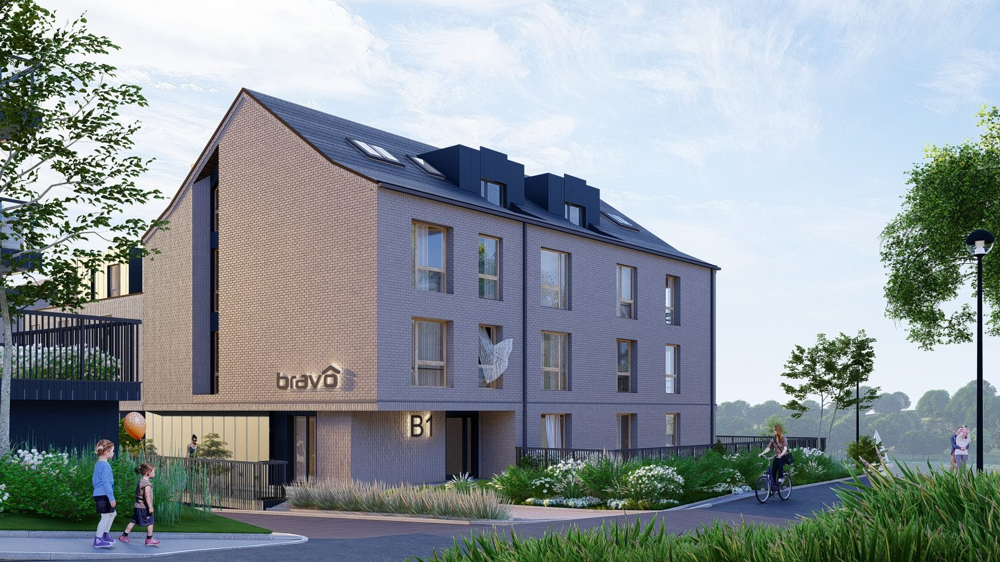
Zakres działań
Co dokładnie robimy
Dziesięć branż w jednym opracowaniu, od koncepcji do nadzoru nad budową.
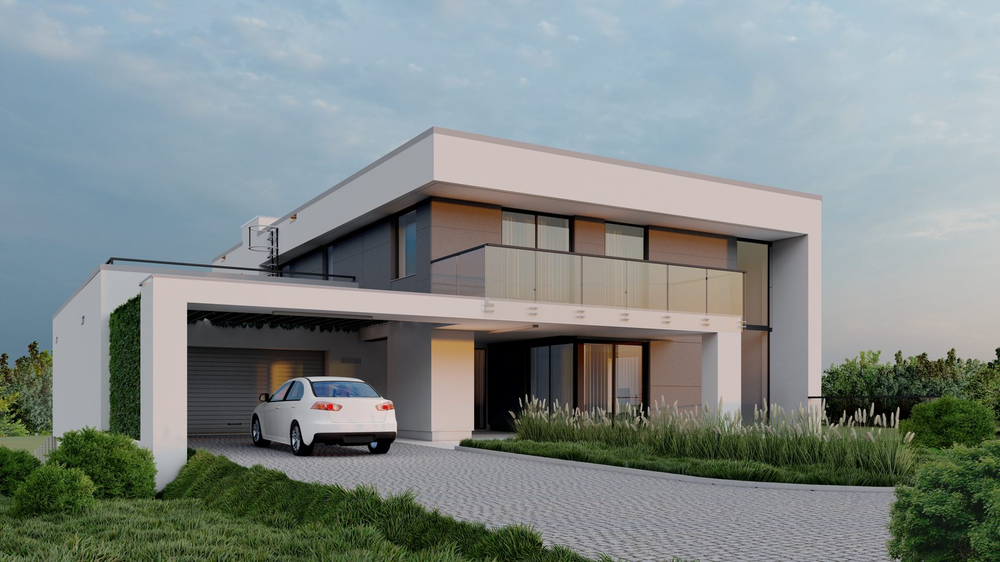
01
Projekty architektoniczne
Rzuty, przekroje, elewacje i opis techniczny. Projekt budowlany i wykonawczy dla budynków mieszkalnych, publicznych i przemysłowych.
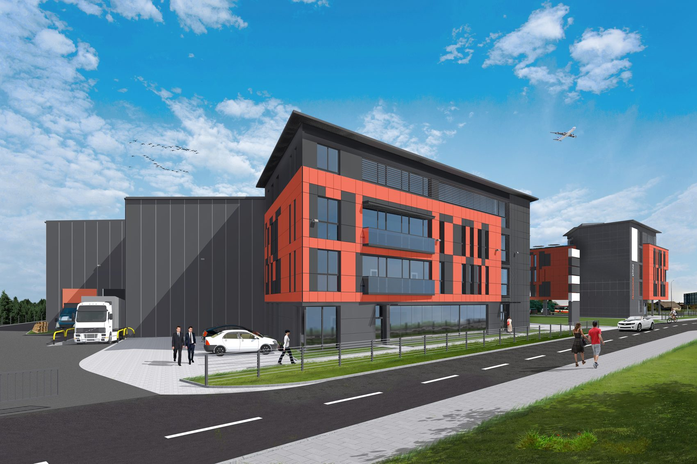
02
Projekty konstrukcyjne
Fundamenty, stropy, więźba, konstrukcje stalowe i żelbetowe. Konstruktor z uprawnieniami POM/0383/PWBKb/16 pracuje u nas na miejscu.
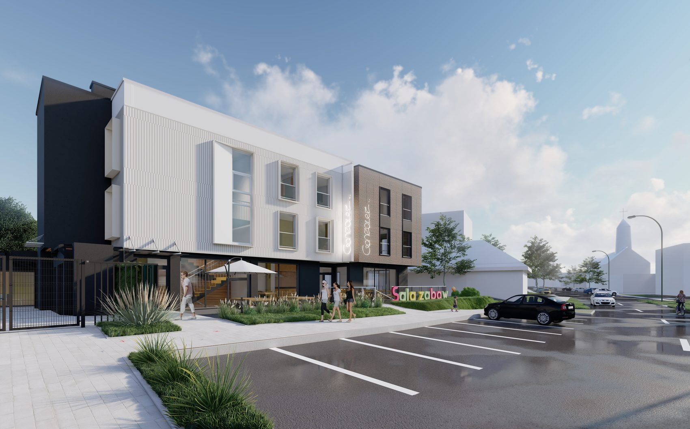
03
Projekty instalacji
Elektryka i instalacje sanitarne w tym samym opracowaniu co architektura. Bez zlecania osobnym biurom i bez rozjeżdżania się rysunków.
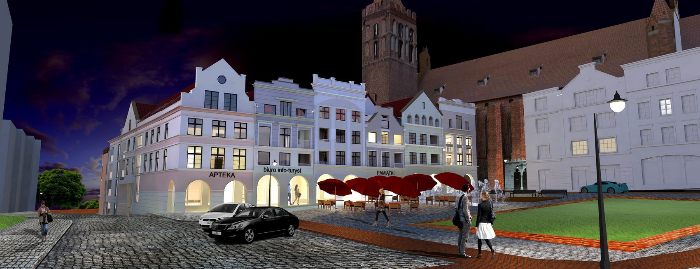
04
Urbanistyka
Koncepcje zagospodarowania terenu i całych kwartałów zabudowy. Za taką pracę dostaliśmy I nagrodę w konkursie SARP w Kwidzynie.
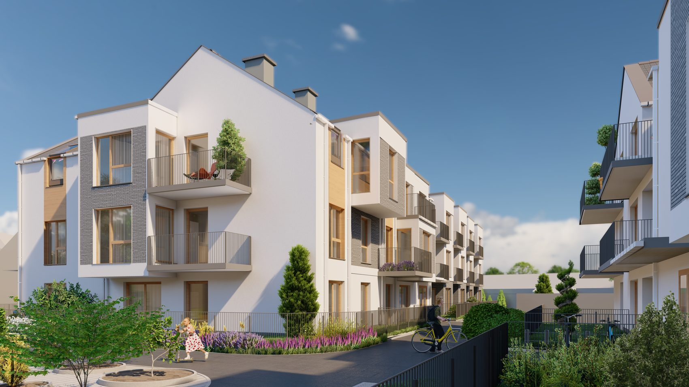
05
Wizualizacje komputerowe
Budynek widać przed budową. Wizualizacje robimy sami, dla własnych projektów i dla inwestorów, którzy potrzebują ich do sprzedaży mieszkań.
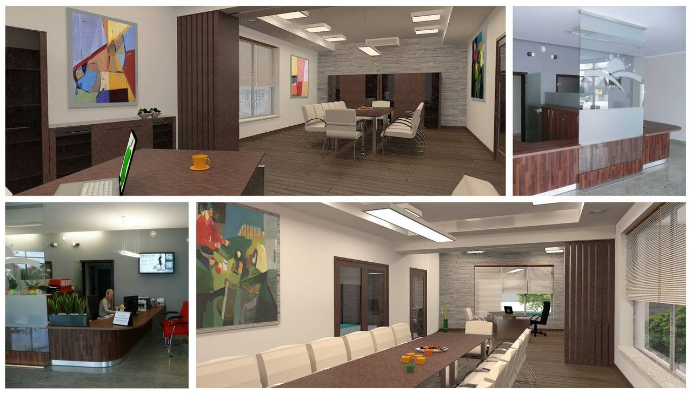
06
Aranżacje wnętrz
Wnętrza szkoły, banku, ośrodka i budynków mieszkalnych. Materiały, kolory, oświetlenie i meble na wymiar.
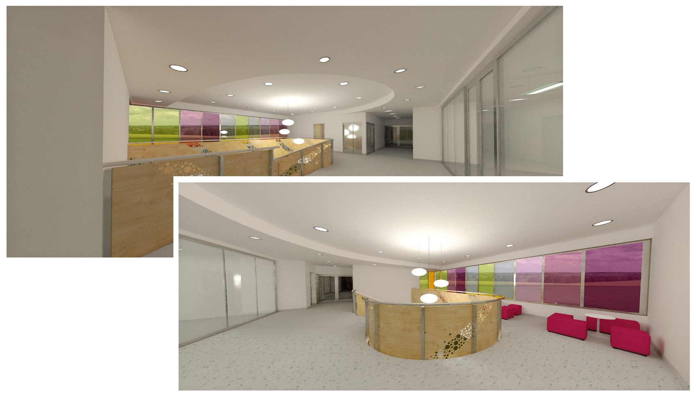
07
Audyty energetyczne
Ocena zapotrzebowania budynku na energię i wskazanie, co realnie obniży rachunki. Potrzebne przy termomodernizacji i przy dofinansowaniach.
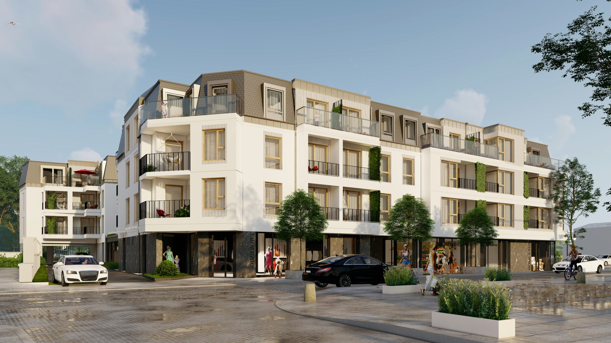
08
Uzgodnienia i pozwolenia
Opinie sanepidu, straży, rzeczoznawców i gestorów sieci. Komplet dokumentów składamy tak, żeby wniosek nie wracał z brakami.
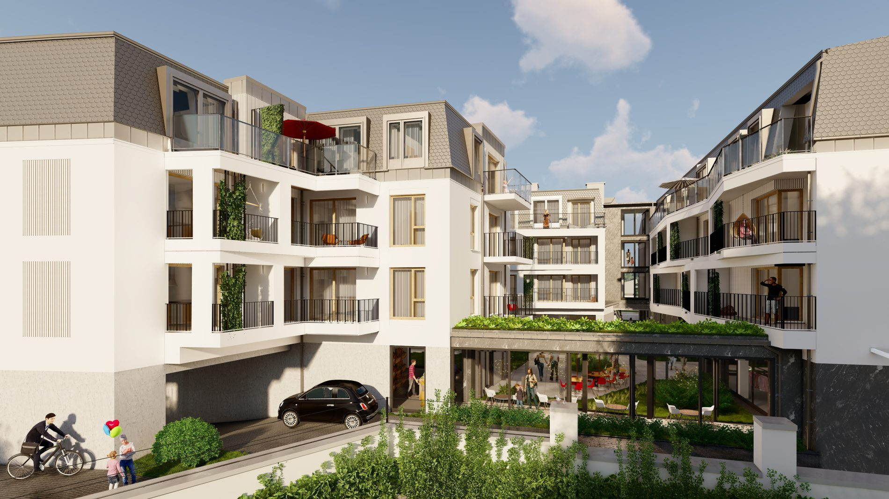
09
Nadzór autorski
Bywamy na budowie i rozstrzygamy to, czego nie da się zapisać na rysunku. Wykonawca nie zostaje sam z pytaniem.
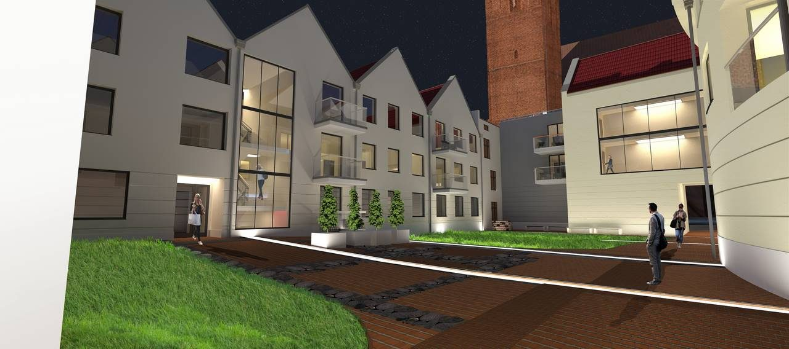
10
Rewitalizacja
Przebudowy i nadanie nowej funkcji istniejącym budynkom oraz terenom, także w otoczeniu zabytkowej zabudowy.
Kolejność prac
Pięć etapów, jeden rozmówca
Tak wygląda droga od pomysłu do budynku, który stoi.